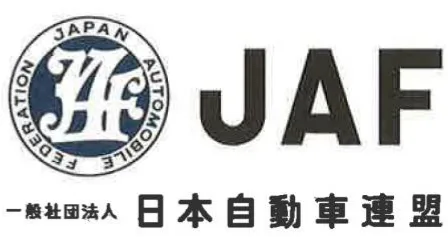

No.001-2026
JAF の公式サイトではありません。JAF が公開する PDF を自動変換した非公式の検索用アーカイブです。記載内容は必ず JAF の原本 PDF で出典をご確認ください。 検索と AI 質問つきのビューアで開く

モータースポーツ部 〒105-0012 東京都港区芝大門1-1-30
日本自動車会館１０Ｆ
ＴＥＬ: 03-3578-4936 ＦＡＸ：03-3578-4937
ＪＡＦＭＳ２０２６０２－０２６４４２９
２０２６年２月２４日
UNIZONE e-Motorsport League
関係者 各位
一般社団法人日本自動車連盟モータースポーツ部部長 村 田 浩 一【押印省略】
ＪＡＦ公認Ｅモータースポーツ国内リーグ規定に関する
２０２６年の運用について
（ＥモータースポーツブルテンＮｏ．００１－２０２６）
標記について、Ｅスポーツ部会審議結果に基づきＪＡＦ公認Ｅモータースポ
ーツ国内リーグ規定について、下記のとおり運用することを公示いたします。
記
１．標記規定第１４条に基づき、ＪＡＦの国内競技規則とその細則について一部適用を除外する。
２．適用除外規則
１）国内競技規則 ：４、５、８、９、１０、１２、１３
２）自動車競技の組織に関する規定 ：第４条
３）ＪＡＦスポーツ資格登録規定 ：全般
３．上記２．以外は、ＪＡＦが定める関連諸規則と共に、リーグ所管団体が作成する諸規則をＪＡＦが承認し運用する。
４．本件運用は年度途中でも変更する場合がある。
以上